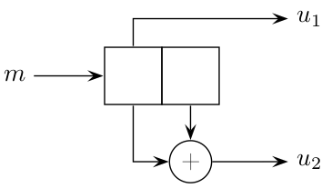

Exercices¶
Exercice 1¶
Le principe du code à parité (3, 2) est de rajouter à chaque bloc du message un « bit de parité » de sorte que le nombre de bit à 1 dans les mots du code soit pair.
Donnez le rendement de ce code.
Donnez l’ensemble des mots du code. Est-ce un code systématique ?
Donnez les matrices génératrice et de contrôle de parité.
Représentez géométriquement dans \(\mathbb{F}_2^3\) les mots du code.
Calculez la distance minimale. En déduire les pouvoirs de détection et de correction du code.
Exercice 2¶
Les codes de Hamming sont définis ainsi dans [Proakis 2008] :
Hamming codes are one of the earliest codes studied in coding theory. Hamming codes are linear block codes with parameters \(n=2^m-1\) and \(k=2^m-m-1\), for \(m\geq3\). Hamming codes are best described in terms of their parity check matrix \(H\) which is an \((n-k) \times n = m \times (2^m-1)\) matrix. The \(2^m-1\) columns of \(H\) consist of all possible binary vectors of length \(m\) excluding the all-zero vector.
Dans cet exercice, on considère le code de Hamming (7, 4).
Donnez le rendement de ce code.
Donnez les matrices génératrice et de contrôle de parité.
Donnez l’ensemble des mots du code.
Calculez la distance minimale. En déduire les pouvoirs de détection et de correction du code.
Exercice 3¶
On suppose un canal binaire où les erreurs de transmissions se traduisent par une suppression de certains bits (et non une modification de leur état). Le récepteur sait quels sont les bits manquants mais ne connaît pas leurs valeurs. Expliquez comment un code de Hamming (7,4) peut trouver les bits manquants lorsque un ou deux bits consécutifs ont été supprimés.
Exercice 4¶
Les mots du message à coder sont de longueur \(k=3\) bits. On utilise un code à parité qui assure que le nombre de bits à 1 dans chaque mot du code est pair.
Donnez la taille \(n\) d’un mot du code.
Donnez la matrice génératrice.
Calculez la distance minimale du code.
On remplace maintenant le code par un code à parité croisée,
c’est-à-dire qu’en arrangeant les mots du message sous forme d’un tableau \(k \times k\),
des bits de parité sont calculés sur chaque ligne et sur chaque colonne.
L’exemple ci-dessous donne les bits de parité pour le message 111010011 :
{kind=link}
Répondez aux questions précédentes en considérant le code à parité croisée. Concluez sur l’intérêt d’un code à parité croisée par rapport à un code à parité simple.
Exercice 5¶
Le meilleur code convolutif de rendement \(1/2\) (avec \(k=1\)) et de longueur de contrainte \(4\) a comme polynômes générateurs \(15_8\) et \(17_8\). Représentez son schéma bloc.
Exercice 6¶
On considère le code convolutif ci-dessous (\(k=1\)) :
{kind=link}
Déterminez \(k\), \(n\), \(K\). En déduire le rendement \(R\).
Donnez les polynômes générateurs.
Calculez la sortie du codeur lorsque l’entrée est
01110110.Représentez le diagramme en treillis.
(Optionnel) Décodez la séquence reçue
11001010à l’aide de l’algorithme de Viterbi.
{kind=link}